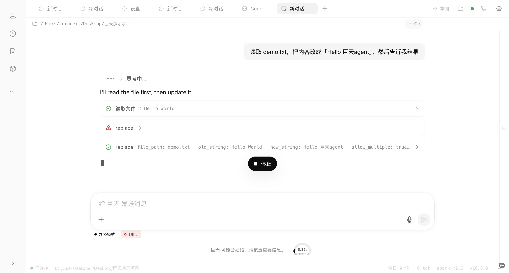

性能
本地就绪的引擎，
强悍出征。
43 个内置工具直连终端与文件系统。你说目标，它拆步骤、调工具、验证、给结果——不是建议，是执行。每轮对话前自动快照，一整轮改动一键撤销。独立的评估器逐轮检查，目标没完成就自动续跑。
巨天引擎
JT CORE
43 个内置工具
直连真实系统
终端、文件、检索、进程——不是演示环境，是你每天用的这台电脑。MCP 协议可继续扩展。
21 档免费模型
免 key 直聊
开箱即聊，注册即用。8 家免费档开箱可试，推理模型、多模态看图都齐。
本地优先
数据不出这台电脑
会话、记忆、知识库全部落在本机；手机远程只在局域网内，配对码守着每一道接口。
写入可撤销
按改动粒度回滚
AI 的每次改动都是可逐条查看的 diff，而不是整文件覆盖后让你自己去翻。
最多
0 个
内置工具
直连终端 · 文件 · 检索
直连终端 · 文件 · 检索
最多
0 档
免费模型
免 key 直聊 · 多模态看图
免 key 直聊 · 多模态看图
整整
0 字节
上传到云端
会话 · 记忆 · 知识库全在本机
会话 · 记忆 · 知识库全在本机
设计
一体成型的杰作
十种强调色一键切换，窗口、按钮、高亮跟着变——界面是你的，不是我们的。
文件树、多标签、语法高亮、内置终端；AI 改动逐条成 diff，一键撤销。
一个目标一支团队：总管拆任务，员工互相 @ 接管，自动汇总交付。
有长期记忆的虚构角色，能说会画。合规内建：逐条标识 AI 生成，退出绝不挽留。
自动拆检索词、多轮搜索、阅读来源，产出带引用的调研报告。免费模型就能跑。
macOS 原生窗口材质与系统菜单齐备；红绿灯贴进界面，顶栏零浪费。

升级值不值？
当然值。
看看巨天agent 有什么新亮点。
全功能开源（MIT），Windows / macOS / Linux / Android 四端同发，手机可独立运行。
43 个工具
直连终端与文件
不是建议
是执行
目标模式
自动续跑
直到达成
独立评估器逐轮检查，进度卡片实时可见
深度调研
带引用的
调研报告
多路检索 · 交叉验证 · 免费模型可跑
隐私
0 字节
上云
AI 角色
能说
会画
长期记忆 · 回复朗读 · 一句话出图
全语音通话
边说边
干活
全屏语音通话，说一句它执行一句
细节
看不见的地方，也做了。
01
∥ 3并行上限
每一帧都能打断
子代理并行、工具循环、远程会话，随时按停。进行到一半的工作不会因为一次误点而丢失。
02
0重新加载
切换不丢状态
多标签工作区里切走再切回，编辑器、滚动位置、流式输出都在原处等着你。
03
83 条恶意命令库
危险命令有闸门
关机、清库、强制覆盖——按执行意图全位置拦截，AI 被拦也会换花样再拦一次。
04
LAN仅局域网
数据不离开这台电脑
会话、记忆、知识库全部落在本机；手机远程只在局域网内，配对码守着每一道接口。